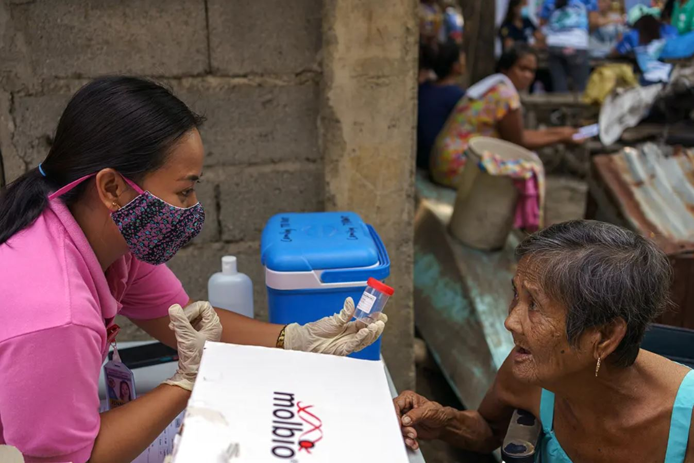
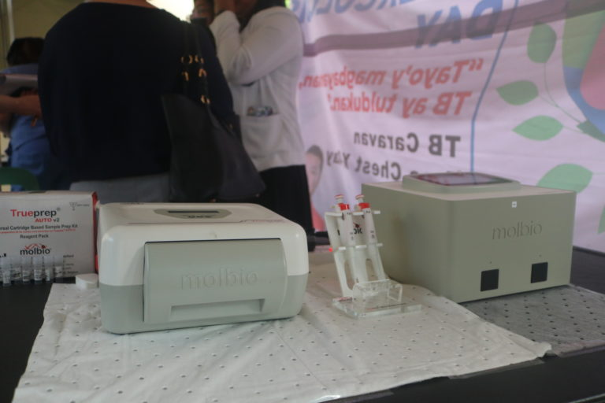

Information
- Tuberculosis (TB) is an infectious disease caused by a type of bacterium and usually affects the lungs. When a person coughs, sneezes, or spits, it spreads into the air. Tuberculosis can be prevented and cured. It is believed that tuberculosis affects approximately a quarter of the world's population.
- If not treated early or properly, pulmonary tuberculosis can cause long-term lung damage. Tuberculosis can also spread to the bones, spine, brain, spinal cord, lymph glands, and other parts of the body.
Transmission
- Tuberculosis is airborne, and a few droplets of bacteria (Mycobacterium tuberculosis) that another person inhales are immediately infected with TB. How does it spread? When a person with TB sings, sneezes, coughs, spits, and shouts they immediately put the person they are with at risk

Typical Areas
- People acquire tuberculosis (TB) from one another via airborne transmission. When an individual with TB coughs, laughs, sings, or sneezes, they release the bacteria that cause the disease into the air. Inhaling air contaminated with these TB germs can lead to a TB infection. During this phase, the TB bacteria in the body are inactive or dormant, meaning they are not causing illness, and they cannot be transmitted to others. However, if the immune system weakens, the dormant TB bacteria can become active and multiply, potentially leading to the development of TB disease. Failure to treat TB promptly and effectively can result in severe illness and even death.
Early Detections
Common symptoms of TB:
- prolonged cough (sometimes with blood)
- chest pain
- weakness
- fatigue
- weight loss
- fever
- night sweats.
Early detection of tuberculosis is crucial and it may be important to get screened for tuberculosis if you have any of the following:
- Cough especially if it is more than 3 weeks
- Bloody sputum/phlegm
- Losing weight (without going on a weight loss diet)
- Immunosuppressed
- Living with someone who has the disease
Misbeliefs
-TB is only caused by lack of hygiene or personal neglect. -TB is only acquired by people with weak immunity.
-TB is a "death sentence" that the person who has it has no hope of recovery.
-Having complete vaccines is not essential and does not necessarily contribute to human health.
-Vaccination is ineffective and can cause adverse effects such as autism.
-TB is only caused by lack of hygiene or personal neglect.
-TB is only acquired by people with weak immunity.
-TB is a "death sentence" that the person who has it has no hope of recovery.
-Having complete vaccines is not essential and does not necessarily contribute to human health.
-Vaccination is ineffective and can cause adverse effects such as autism.
Correct Information:
- TB is caused by Mycobacterium tuberculosis which is a type of bacteria, and is not only caused by lack of hygiene or personal negligence.
- It is not only people with weak immunity who can get TB. Anyone can be affected, regardless of the strength of their immunity.
- TB is curable, especially if it is detected and treated promptly.
- Vaccination against TB is important and can help prevent this disease.
- There is no evidence to show a connection between vaccination and autism. Vaccines are safe and effective in preventing the disease.

Right Treatments
- The most common treatment for active TB is isoniazid INH in combination with three other drugs—rifampin, pyrazinamide and ethambutol. You may begin to feel better only a few weeks after starting to take the drugs but treating TB takes much longer than other bacterial infections. You must continue taking your medication as prescribed for the entire time your doctor indicates or you could get sick again, have a harder time fighting the disease in the future and spread the disease to others. Not completing your entire course of medication could also contribute to drug-resistant TB. While you are in treatment for active TB disease, you will need regular checkups to make sure your treatment is working. Everyone is different, but there are side effects associated with taking the medications, including: Upset stomach, nausea and vomiting or loss of appetite Tingling or numbness in the hands or feet Itchy skin, rashes or bruising Changes in your eyesight or blurred visions Yellowish skin or eyes Dark-colored urine Weakness, fatigue or fever that for three or more days.
Health Care Sites and Services
Select any of the two places, if not, Learn more about us:

 TB Knows!
TB Knows!